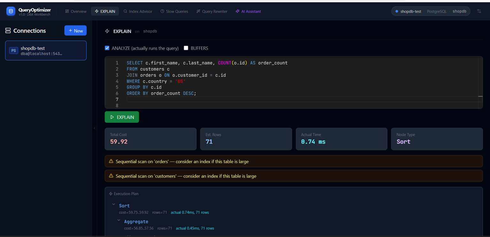

QueryOptimizer is a self-hosted workbench for DBAs and developers. Visualize execution plans, find missing indexes, surface slow queries, and rewrite bad SQL — for PostgreSQL and SQL Server, in the same tool.
One-time payment · Lifetime use · Installs in 5 minutes with Docker

Six tools in one browser-based workbench. No agents, no SaaS, no data leaving your server.
Run EXPLAIN ANALYZE (PostgreSQL) or SET STATISTICS PROFILE ON (SQL Server) and see the plan as an interactive color-coded tree. Automatic warnings flag seq scans, row estimate drift, and expensive joins — no manual interpretation needed.
Paste any query and get a prioritized list of missing indexes backed by live catalog data — not guesswork. Each recommendation includes a ready-to-copy CREATE INDEX statement and an explanation of why it helps.
Surface your worst-performing queries ranked by average execution time. Reads from pg_stat_statements (PostgreSQL) or sys.dm_exec_query_stats (SQL Server). Filter, drill in, and reset stats with one click.
Catch anti-patterns before they hit production — no database connection needed. Detects SELECT *, OR in WHERE, functions on indexed columns, leading wildcards, NOT IN, large OFFSET, implicit cross joins, and more.
Connect your own AI — OpenAI, Anthropic, Ollama, or Azure OpenAI. Get a fully rewritten query with explanations, warnings, and tuning tips. Your API key stays encrypted on your server and never touches our infrastructure.
Save and switch between multiple database connections. Credentials encrypted at rest with Fernet symmetric encryption. Supports PostgreSQL and SQL Server from the same interface, with a database-type badge on each connection.
Full feature support for both PostgreSQL and SQL Server — including named instances, Windows Authentication, and Azure SQL.
Versions 12 — 17
2016 · 2017 · 2019 · 2022 · Express · Azure SQL
Your database credentials and query data never leave your server.
No cloud dependency
Zero outbound connections except to AI endpoints you configure. Your queries stay on your infrastructure.
Encrypted credentials
Database passwords are encrypted with Fernet symmetric encryption before being written to the local SQLite database.
No telemetry
No usage data, error reports, or analytics are sent anywhere, ever.
Ships as Docker Compose
Single file, no external dependencies. Installs in 5 minutes on Windows, Linux, or macOS.
Requires Docker Desktop (Windows/Mac) or Docker Engine (Linux). That's it.
# 1. Extract the ZIP you received after purchase
unzip queryoptimizer-v1.0.zip
cd queryoptimizer
# 2. Run the installer
# Windows: powershell -ExecutionPolicy Bypass -File setup.ps1
# Linux/macOS: chmod +x setup.sh && ./setup.sh
# 3. Open your browser
http://localhost:3000
Add a database connection, run your first EXPLAIN, done.
One price. Yours forever. No subscription.
Secure checkout · Instant ZIP delivery · 1 license = 1 installation
Need more than one installation? Contact us for team pricing.